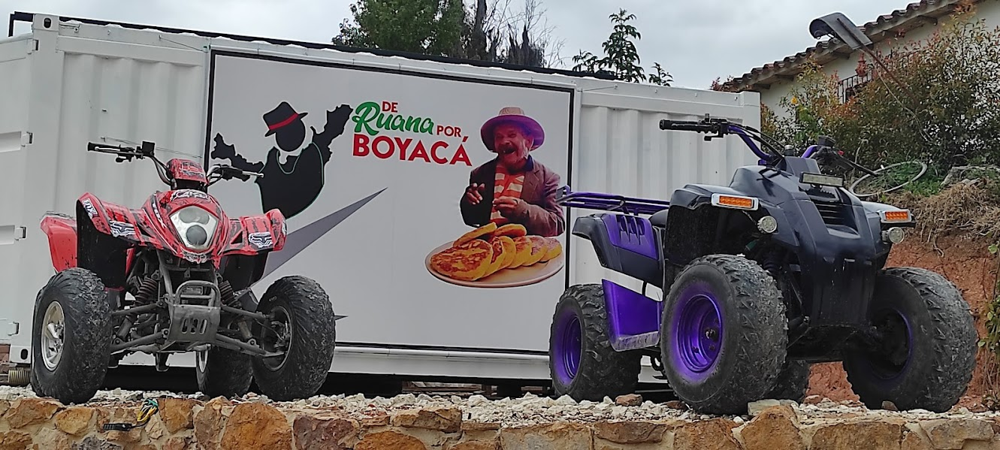
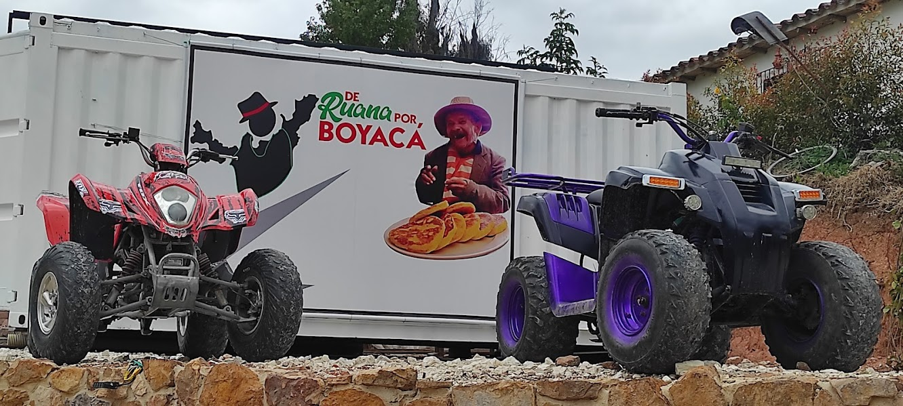

Planes Turísticos
En cuatrimoto por el Pantano de Vargas
Vive una aventura única con nuestro paseo en cuatrimoto por los lugares más emblemáticos del Pantano de Vargas, escenario clave de la histórica batalla que marcó un hito en la independencia de Colombia. En este tour guiado, recorreremos el cerro de Bolívar, el cerro de Pan de Azúcar, una hermosa quebrada y el monumento a los 14 lanceros, mientras te contamos los detalles del desarrollo de la batalla. El recorrido tiene una duración de entre 1 y 3 horas, dependiendo del ritmo y el interés de los participantes, y te permitirá conocer de cerca la historia y la naturaleza que rodea este sitio tan importante.
Paseo en carruaje
Para una experiencia más tranquila pero igualmente emocionante, te ofrecemos un paseo en carruaje halado por un majestuoso caballo percherón. Con capacidad para 9 personas, este recorrido te llevará por los mismos puntos históricos del Pantano de Vargas, como la quebrada, el cerro de Bolívar y el monumento a los 14 lanceros. Disfrutarás de una perspectiva diferente del paisaje y te sumergirás en la historia del lugar mientras nos desplazamos de un sitio a otro. Este recorrido tiene una duración de aproximadamente 1 a 2 horas, ideal para quienes buscan una experiencia relajada y enriquecedora.
Guianzas Turísticas
Con nuestras guianzas turísticas personalizadas, te llevaremos a conocer lo mejor de Boyacá, adaptándonos a tus intereses y tiempo disponible. Puedes elegir entre visitar los pintorescos pueblitos de la región o explorar los sitios más recomendados, todo acompañado de un guía experto que te contará la historia, curiosidades y secretos de cada lugar. Ofrecemos un servicio cómodo, con transporte incluido en uno de nuestros vehículos, para hacer tu experiencia más placentera. Además, podemos organizar el plan según tus necesidades, incluyendo salida, trayectoria, comidas, estadía y todo lo necesario para garantizar que tu viaje sea inolvidable. Nuestros guías, altamente capacitados y apasionados por la región, asegurarán una experiencia enriquecedora en cada rincón de Boyacá.
.jpg)
.jpg)
.jpg) 
